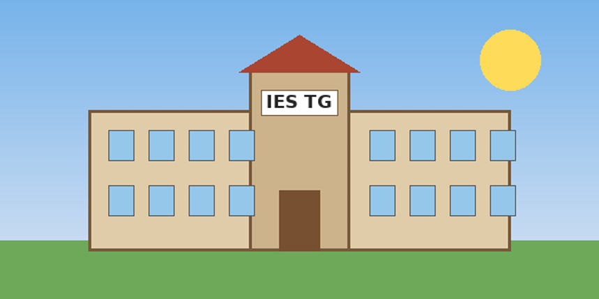

Bienvenidos a la webDepartamento de In formáticadel IES TG. Aquí encontrarás unformación sibre los ciclos formativos que impartimos, el horario de clases y la forma de ponerte en contacto con nosotros.

Menú:Ciclos | Matrícula | Horario | Contacto
| Horario | Días de la semana | ||||
| Lunes | Martes | Miércoles | Jueves | Viernes | |
| 8:15-9:15 | Programación | Bases de Datos | Lenguaje de Marcas | Entornos de Desarrollo | Sistemas Informáticos |
| 9:15-10:15 | Lenguaje de Mrcas | Bases de Datos | Programaciòn | ||
| 10:15-10:45 | RECREO | ||||
10:45-11:45 |
Sistemas Informáticos | Programacón | Entornos de Desarrollo | Bases de Datos | Lenguaje de Marcas |